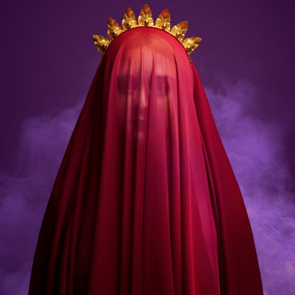

| Home | Bio | Tour | Music |
|
Terror Jr is an American pop trio consisting of Felix Snow, former "Cataracts" band member David "Campa" Benjamin Singer-Vine, and singer-songwriter Lisa Vitale. The group made their first appearance with their single "3 Strikes", featured in Kylie Jenner's "Glosses" short film. "Come First" became their biggest hit so far, peaking at number 10 on Billboard Spotify Velocity chart. The pop trio released a musical project named "Bop City" on Oct. 21, 2016 and the follow-up "Bop City 2: TerroRising" on Jun. 16, 2017. The series concluded with Bop 3: The Girl Who Cried Purple, released on Sep. 29, 2017. |
|  |
|
Terror Jr are currently working on their debut full-length album scheduled for release early 2018. |